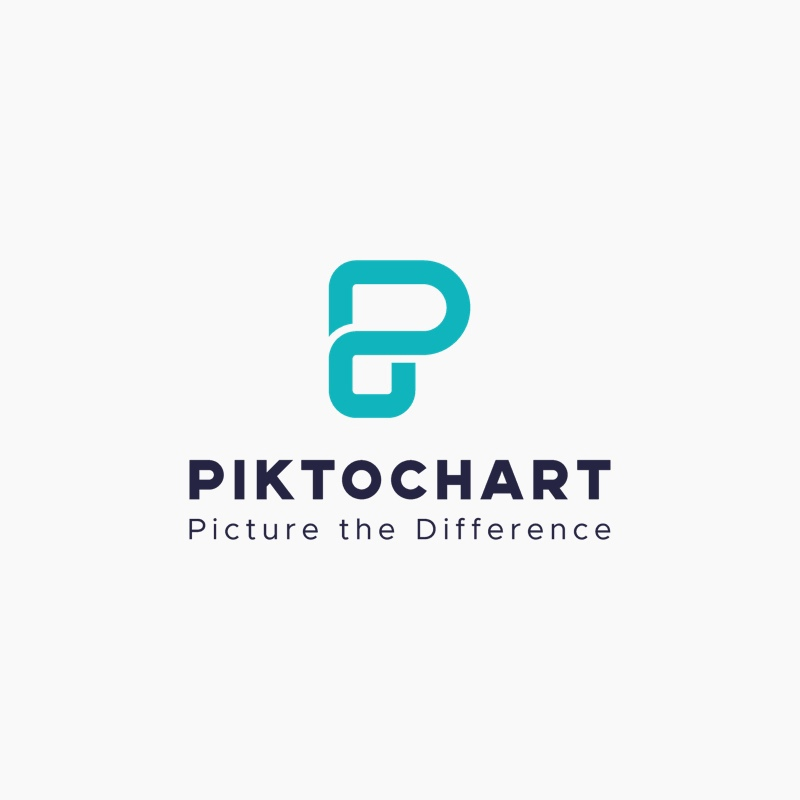

Piktochart
Графический онлайн-редактор для создания инфографики, отчетов и презентаций
Перейти на сайтОписание
Piktochart — это онлайн-инструмент для создания инфографики, который позволяет пользователям без специальных навыков дизайна создавать визуально привлекательные графические материалы.
Преимущества
- Широкий выбор шаблонов и тем
- Интерфейс прост и интуитивно понятен
- Доступ к обширной библиотеке иконок и изображений
- Различные шрифты, стили и эффекты.
- Поддержка интерактивных элементов, таких как ссылки, кнопки и всплывающие окна.